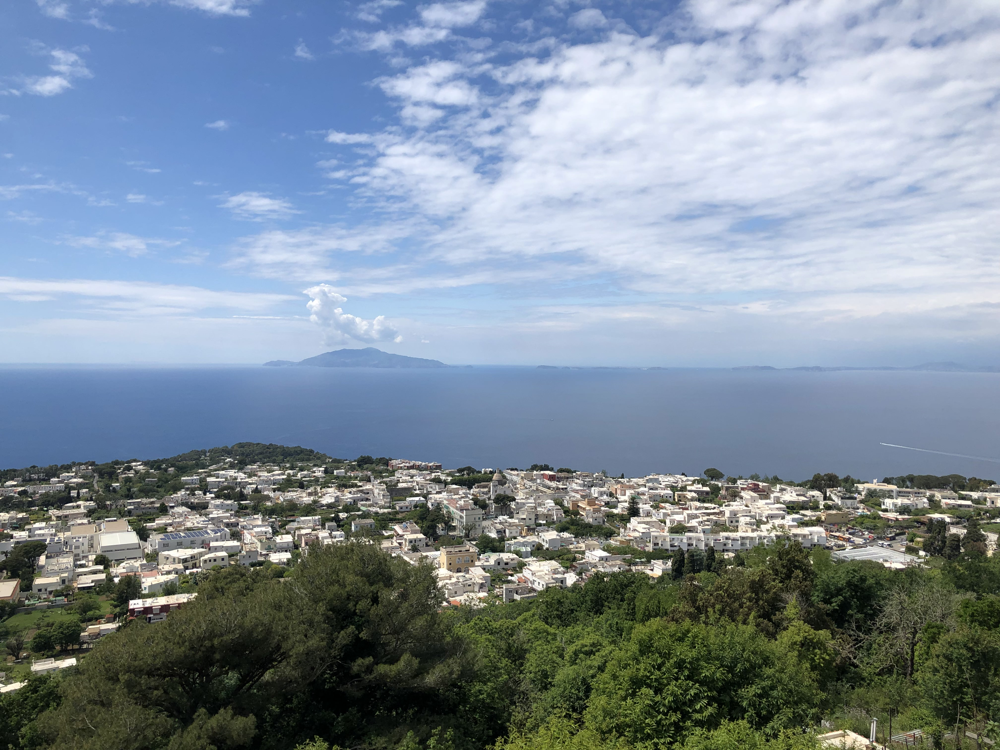
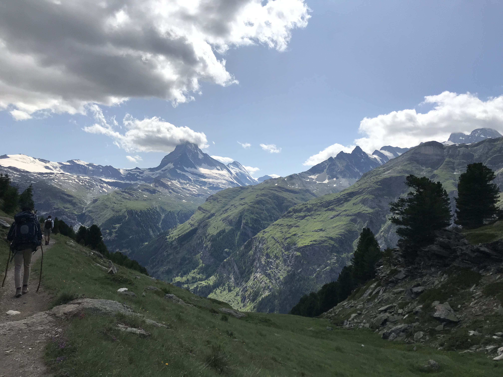
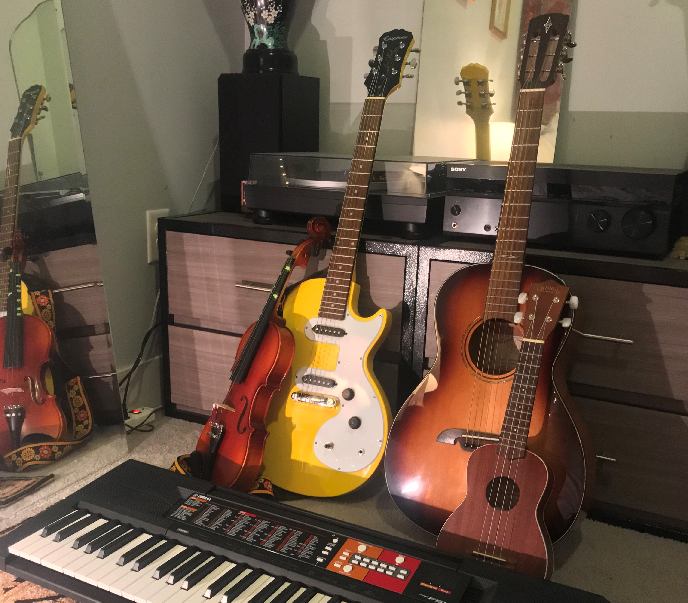

Travel
Last summer I studied abroad in Metz, France. I was lucky enough to travel to Spain, Luxembourg, Italy, England, Switzerland, and so many other amazing places. I believe there is nothing more important than travel, as it is essential in gaining a world perspective and appreciation for other cultures. Also, j'ai appris le français quand j'y étais.
Hiking
Hiking is one of my favorite hobbies. I have travelled three times to Colorado to hike Pike's Peak, the Rockies, Garden of the Gods, and many more. I hiked the Grand Tetons in Wyoming last year and got caught in a hail storm. I thought it would be the most amazing hike I've ever done until I made the two day Europaweg hike through Switzerland. I crossed the world's longest suspension bridge and saw the Matterhorn in all of its glory. This summer I also hiked Harder Kulm in Interlaken, Switzerland, and I regularly hike the mountains around my home in Georgia.
Music
Music is my passion. I grew up taking violin lessons, but now I play guitar, ukelele, and a little piano. I am in a band called the Poppy Patch Kids, where I play guitar while my friend plays the banjolele. I believe wholeheartedly in the therapeutic powers of music, and hope that someday I can incorporate it in my career, hopefully spreading the joy and knowledge of playing music to children.